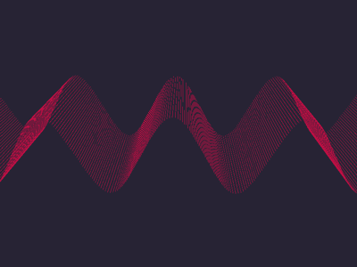

Нажать! Пуск.
Современная астрофизика, ч. I
Современная астрофизика, ч. IT
Современная астрофизика, ч. III
Современная астрофизика, ч. IV
Современная астрофизика, ч. V
Современная астрофизика, ч. VI
Современная астрофизика, ч. VII
Современная астрофизика, ч. VIII
Современная астрофизика, ч. IX
Современная астрофизика, ч. X
Современная астрофизика, ч. XI
Современная астрофизика, ч. XII
Метеорный поток Персеиды и августовское небо, ч. I
Метеорный поток Персеиды и августовское небо, ч. II
Метеорный поток Персеиды и августовское небо, ч. III
Спутник Сатурна Титан
Исследование Вселенной: прорывы и тупики XXI века, ч. I
Исследование Вселенной: прорывы и тупики XXI века, ч. II
Исследование Вселенной: прорывы и тупики XXI века, ч. III
Исследование Вселенной: прорывы и тупики XXI века, ч. IV
Исследование Вселенной: прорывы и тупики XXI века, ч. V
Эфир выходных: Юпитер
𝄞
Система Юпитера
Газовые планеты-гиганты. Юпитер, ч. I
Газовые планеты-гиганты. Юпитер, ч. II
Газовые планеты-гиганты. Юпитер, ч. III
Исследование Юпитера, зонд «Юнона»
Спутники Юпитера
Зонд Юнона — миссия к Юпитеру
Урок астрономии
Бонус трек: Космический Укроп или обзор книги
астронавта Скотта Келли про год в космосе
Венера, ч. I
Венера, ч. II
Человек на Марсе, ч. I
Человек на Марсе, ч. II
Марс, ч. I
Марс, ч. II
Солнечная система, ч. I
Солнечная система, ч. II
Неоптические приборы, ч. I
Неоптические приборы ч. II
Оптические телескопы ч. I
Оптические телескопы ч. II
Наука астрономия ч. I
Наука астрономия ч. II
Астрофизические итоги, ч. I
Астрофизические итоги, ч. II
Астрофизические итоги, ч. III
Астрофизические итоги, ч. IV
Please enable JavaScript to view the comments powered by Disqus.
(1) Saturn-radio работает. (2) Для паузы нажми пробел. (3) Назад и вперед между передачами нажимай стрелки влево и вправо. (4) В Safari включи значок звука на вкладке. (5) На планшете тапни по плейлисту. (6) Значком «скрипичного ключа» 𝄞 помечены музыкальные фрагменты. (7) Пожелания facebook.com/groups/radio.ga
Сатурн-радио, 2018 ⦵